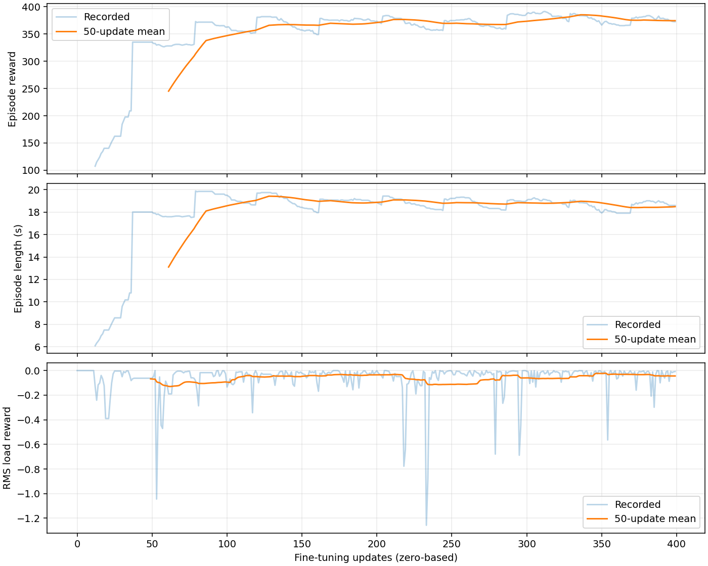
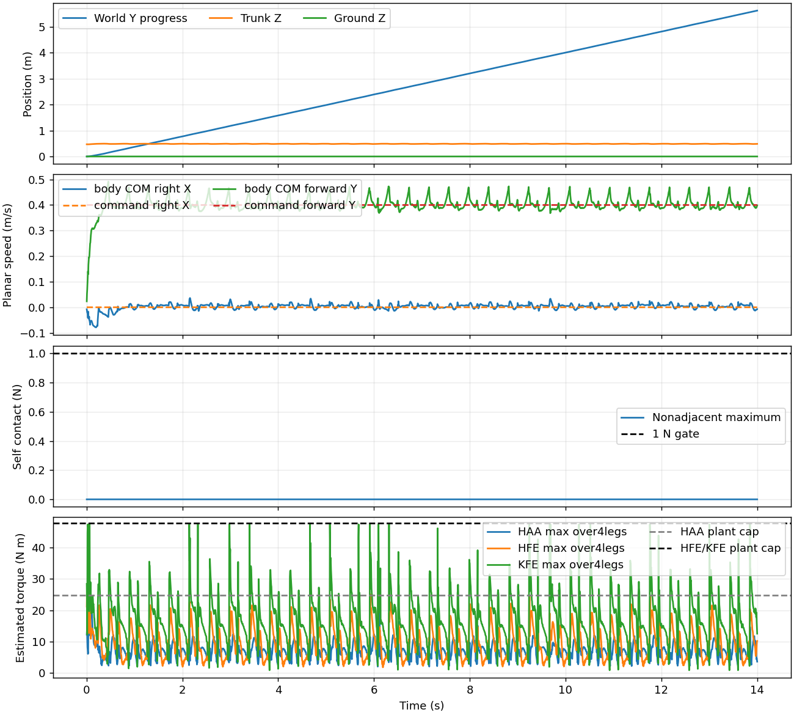
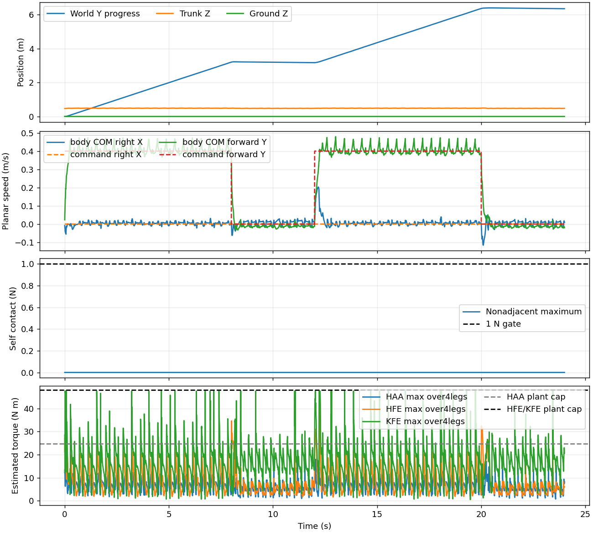
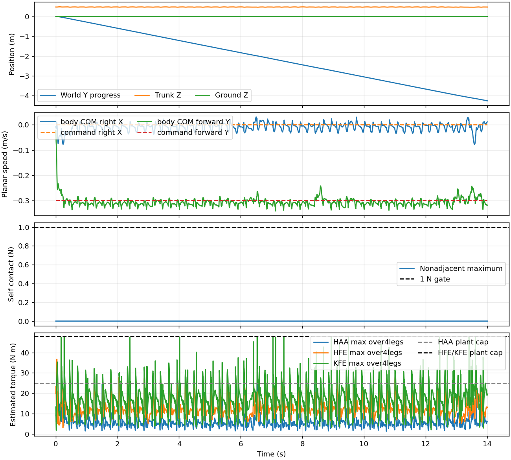
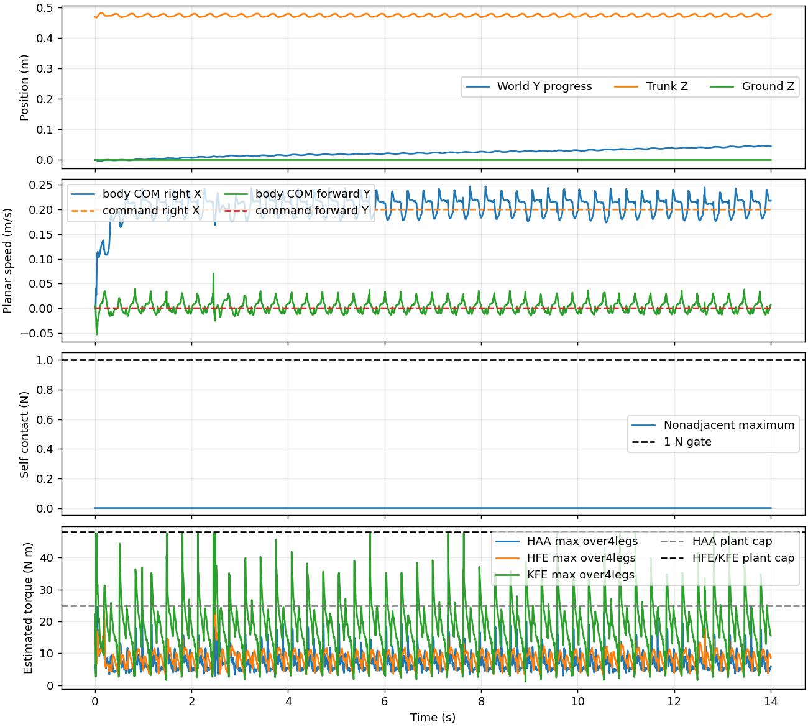
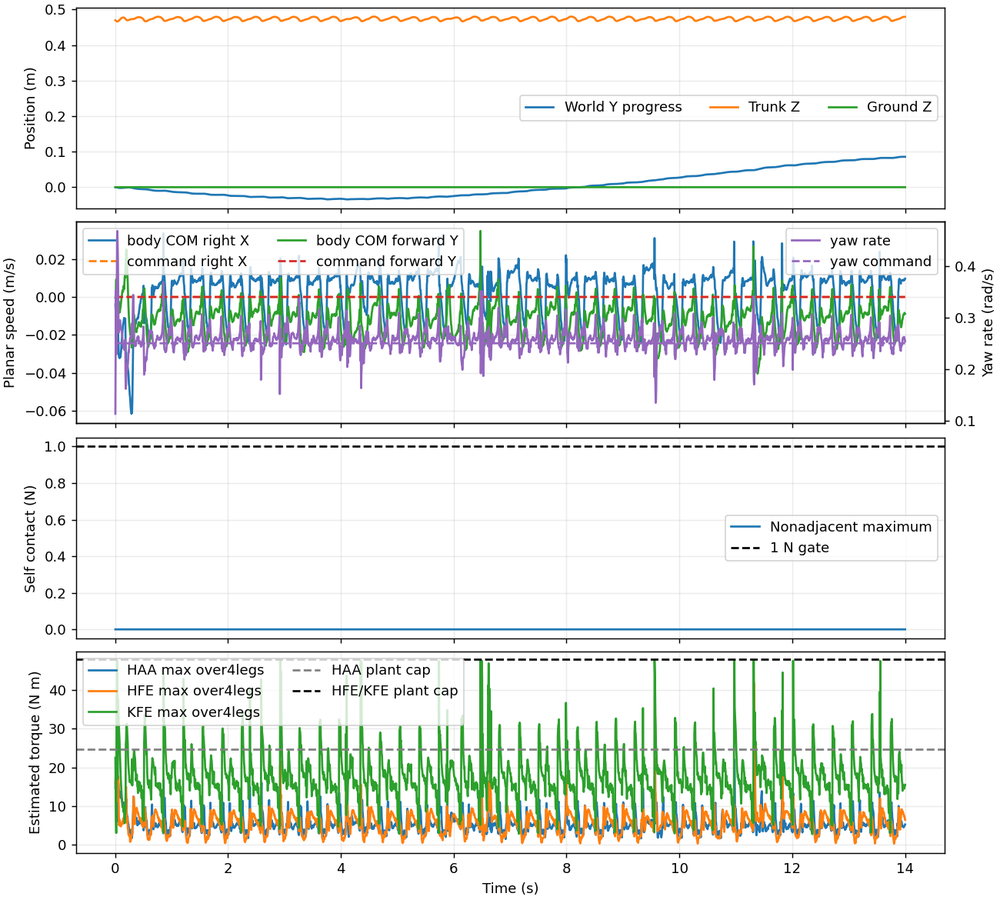
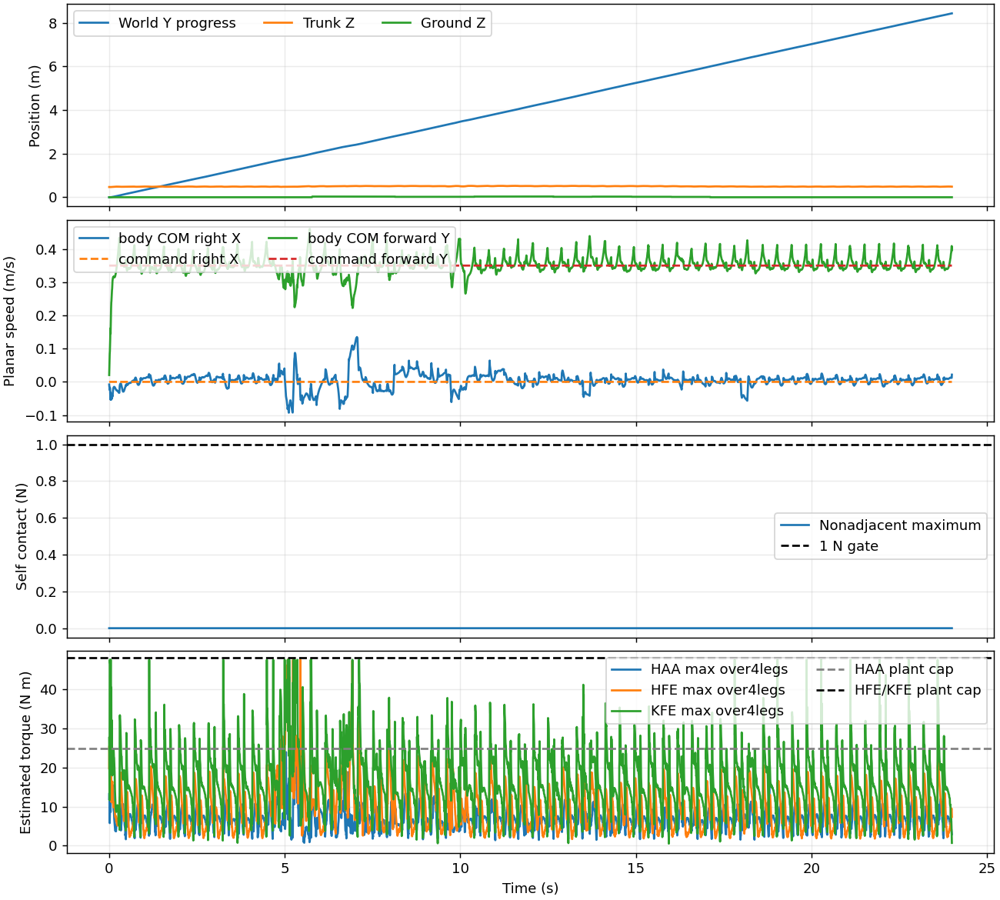
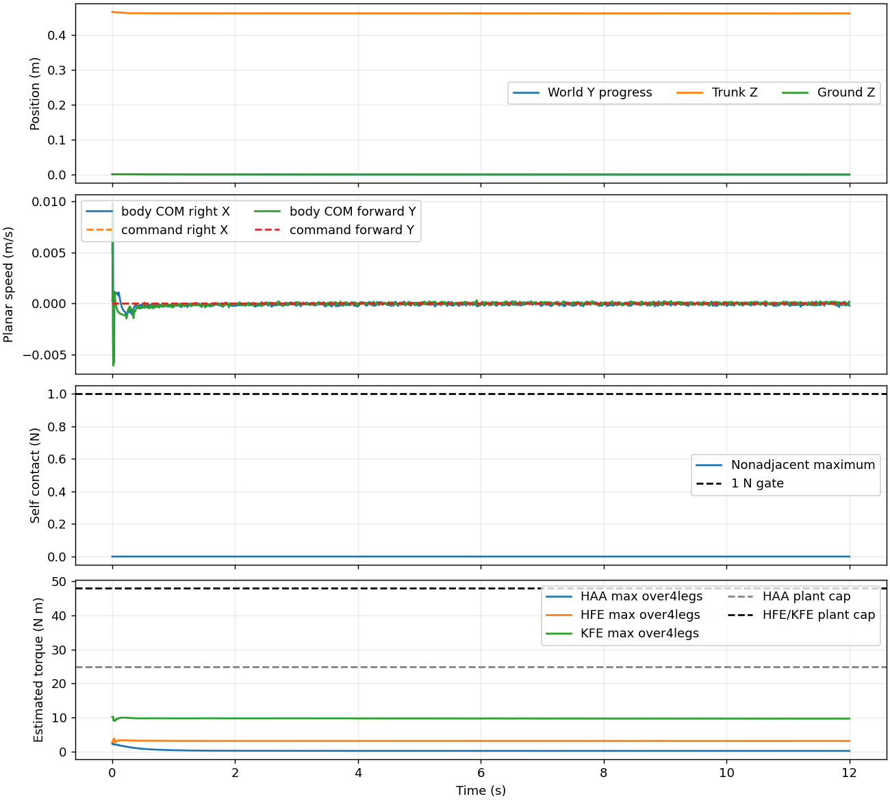
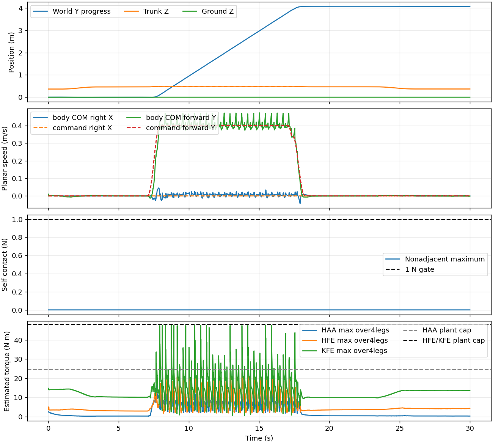
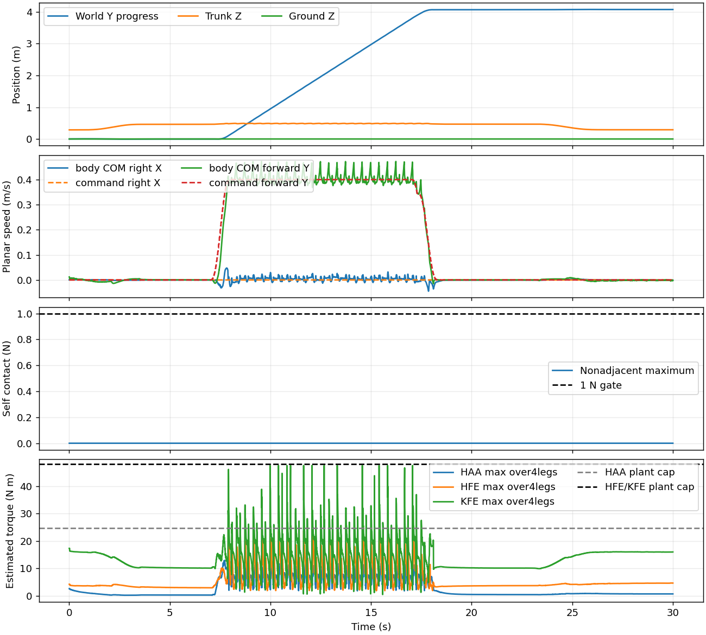

동작 통과 9/9, 정격 RMS 초과가 남은 시험 0/9. 추가 PPO 업데이트 400회, 후보 model_15699.pt.
후진·회전 비중과 관절별 부하 보상을 조정했다. 원본 CAD·모터 한도·주행 명령과 시험 기준은 유지했다. 학습에서는 200Hz 토크 제곱 EWMA(.5s)를 사용했고, 아래 RMS는 각 시험의 실제 전체 기록구간 통계다. 조기 실패하면 기록구간이 단축된다. 추정 상전류이며 배터리 전류나 실측 전류가 아니다. 동작과 정격 부하 기준을 함께 충족해야 최적화 목표 달성으로 판정한다. 계단은 사용자의 요청으로 이번 범위에서 제외했다.
전체 결과 · 108개 관절별 비교 · 최종 후보 체크포인트
후속 학습에서는 이전 통과 후보를 동결한 교사로 사용해 전진·정지 명령의 actor 평균 출력 보존 손실(가중치 5.0)을 PPO 손실에 추가했다.

| 시험 | 기존 | 후보 | 정격 RMS 초과 수 기존→후보 | 기록 s | 관절별 RMS A 범위 | 자가 접촉 N | 미통과 사유 |
|---|---|---|---|---|---|---|---|
| 평지 전진 | 통과 | 통과 | 0 → 0 | 14.000 | 3.26–9.94 | 0.0 | |
| 정지·재출발 | 통과 | 통과 | 0 → 0 | 24.000 | 3.01–9.62 | 0.0 | |
| 후진 | 통과 | 통과 | 1 → 0 | 14.000 | 2.68–9.88 | 0.0 | |
| 측면 이동 | 통과 | 통과 | 0 → 0 | 14.000 | 2.41–10.76 | 0.0 | |
| 제자리 회전 | 미통과 | 통과 | 1 → 0 | 14.000 | 1.72–9.27 | 0.0 | |
| 1–3.5 cm 요철 | 통과 | 통과 | 0 → 0 | 24.000 | 3.17–9.70 | 0.0 | |
| 기립 유지 | 통과 | 통과 | 0 → 0 | 12.000 | 0.16–6.77 | 0.0 | |
| 10 cm 낮추기·기립·보행·정지 | 통과 | 통과 | 0 → 0 | 30.000 | 1.91–8.57 | 0.0 | |
| 18 cm 낮추기·기립·보행·정지 | 통과 | 통과 | 0 → 0 | 30.000 | 1.92–9.05 | 0.0 |
정격 RMS 초과: 없음

정격 RMS 초과: 없음

정격 RMS 초과: 없음

정격 RMS 초과: 없음

정격 RMS 초과: 없음

정격 RMS 초과: 없음

정격 RMS 초과: 없음

정격 RMS 초과: 없음

정격 RMS 초과: 없음
